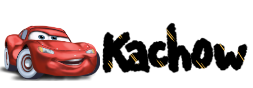

卡翹（Kachow）和yee一樣，是個以聲音為主的迷因，所以在看這篇之前，
先來聽聽卡翹原版的發音ㄅ
起源
想必大家都對這卡翹個不停的角色不陌生吧？
這個詞來自於皮克斯製作、迪士尼發行的動畫《Cars》（汽車總動員），主角閃電麥坤的口頭禪便是「卡翹」，大多在耍帥的時候說。
《Cars》總共出了三部曲，分別在2006年、2011年、2017年上映，是部橫跨十年的經典動畫，第一集的《Cars》剛好也是迪士尼正式併購皮克斯之前，兩方合作的最後一部電影。
散佈
2016年，一張2015年被發在Facebook的閃電麥坤配上文字「KACHOW / ~frenchfag」的圖片被轉發到Onsizzle一個有著各種娛樂圖片的網站，由此去→，開始受到關注。
之後Instagram上一張以卡翹和女生開啟對話的梗圖被重新傳到Twitter，卡翹的人氣水漲船高，打入了各大meme論壇，而後出現各種閃電麥坤加上卡翹的梗圖，成為2016年末重要的迷因。緊接著2017年5月《Cars》第三部曲上映，卡翹來到了第二個高峰，到現在也維持著一定的熱度。
迷因好素材
最近閃電麥坤的另一句名言：「我是速度。（I am speed.）」好像又小小紅起來了？還真是一波未平一波又起呢(X)。仔細想想，《Cars》第一集上映的日期恰好是現在20幾歲年輕人還只是10歲小屁孩的時候，有什麼比童年回憶更適合拿來做迷因的呢？
最後，來看看看過十次《Cars》的汽車迷因小編的訪談吧！